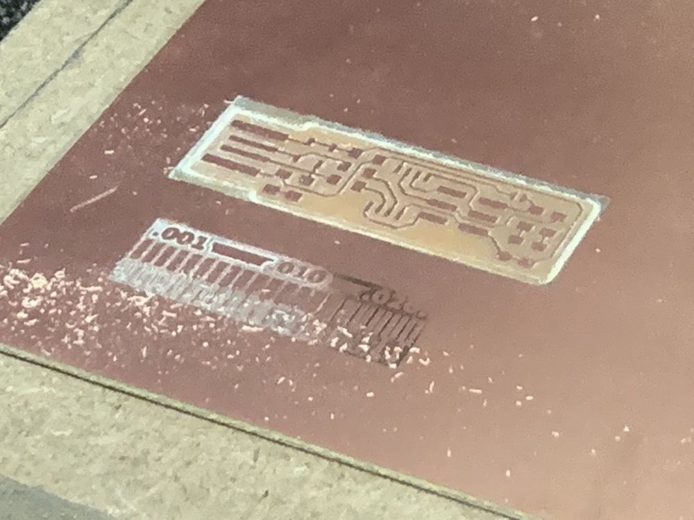
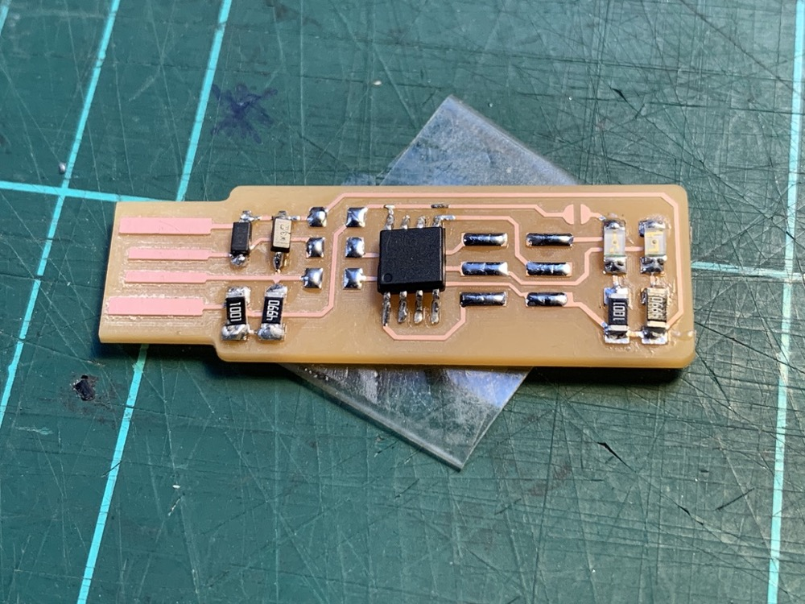

<!DOCTYPE html>
<html lang="en"></html>
<head>
  <meta charset="utf-8">
  <meta content="IE=edge" http-equiv="X-UA-Compatible">
  <meta content="width=device-width, initial-scale=1" name="viewport">
  <title> Rafael Rebolleda — Fab Academy 2020 Documentation</title>
  <!-- Google Fonts-->
  <link rel="stylesheet" href="https://fonts.googleapis.com/css?family=Catamaran&amp;display=swap">
  <link rel="stylesheet" href="../css/main.css">
</head>
<body> 
  <nav>
    <header>
      <ul>
        <li>Rafael Rebolleda</li>
        <li>ESNE (+ LEON)</li>
        <li>Madrid, Spain</li>
      </ul>
      <p class="bio">CX consultant and professor. Single, semi-remote Fab Acadeny student.</p>
    </header>
    <ol>
      <li><a class="red" href="../">About me</a></li>
      <li><a class="blue" href="../FP/">Final Project</a></li>
      <li><a class="blue" href="../DEV/">Project Development</a></li>
    </ol>
    <h1>Assignments</h1>
    <ol> 
      <li><a href="../W1/">Principles & Practices</a></li>
      <li><a href="../W2/">Computer Aided Design</a></li>
      <li><a href="../W3/">Computer Controlled Cutting</a></li>
      <li><a href="../W4/">Electronics Production</a></li>
      <li><a href="../W5/">3D Scan + Printing</a></li>
      <li><a href="../W6/">Electronics Design</a></li>
      <li><a href="../W7/">Computer Controlled Machining</a></li>
      <li><a href="../W10/">Applications & Implications</a></li>
      <li><a href="../W13/">Intellectual Property</a></li>
    </ol>
  </nav>
  <main>
    <h1>W4: Electronics Production</h1>
    <h2>Characterization</h2>
    <p>We start by milling the following template to understand the resolution we can work with with our <a href="https://www.rolanddga.com/support/products/milling/modela-mdx-40-3d-milling-machine">Roland MDX-40</a>.</p>
    <p>The bit that we're using is the following:</p>
    <p>We use mods to process the image and create de code that we'll load on the milling machine:</p>
    <p>The first try doesn't work very well, because the board is not properly attached —flat— to the bed. We tried re-calibrating the bit and also adjusting a deeper cut, but in reality we just need to re-tape the board.</p>
    <p>At this poiny I need to move on, because of time/logistics contraints, to the boards themselve. Later I come back for a follow up try, with the board properly taped, the process works alright.</p>
    <h2>Building the programmer board</h2>
    <p>For this part of the assignment, I followed <a href="http://fab.cba.mit.edu/classes/863.16/doc/projects/ftsmin/index.html">Brian's excellent tutorial</a> to build an AVR ISP programmer.</p>
    <p>Once again, we use mods to create the code for our milling machine:</p>
    <p>We load the program and start milling the first board, which turns out pretty good:</p>
    <p>I foresee soldering won't be easy, so we make a few boards just in case. However, we ran into the same issue as with the testing pattern, with the board not lying flat on the surface:</p>
    <p>After re-taping the board, I create a few of extra boards. Thankfully only a couple of them will be necessary :)</p>
    <h2>Soldering the components, Part I</h2>
    <p>The first thing I do is to check for continuity in the board, making sure current will flow with no problem.</p>
    <p>I had never soldered surface mount components, only through-hole, so the first try is rather embarrasing :D</p>
    <p>Moreover, I break the lines when trying to de-solder the chip to reposition it for a better fit.</p>
    <p>To wrap this first round of soldering, for the life of me I can't see the lines in the zener diodes</p>
    <p>I was happy for how the board turned today with the CNC, but soldering was not a good experience!</p>
    <h2>Soldering the components, Part II</h2>
    <p>Alex, my local instructor, helped me with some small changes for the second sessions of soldering that really made a difference.</p>
    <ul>
      <li>Thinner solder. The one I was using was just to thick and even a drop was too much for the surface mount components.</li>
      <li>Thinner tip on the soldering iron. Another thing that made a huge impact.</li>
      <li>Another major paint point was that the board itself moved as I was trying to solder components on top. Just softly fixing it to the table with wrapped-around tape made things so much easier.</li>
    </ul>
    <p>Withn all these small but important changes, I was already doing so much better, as we can see in the laying of these pads:</p>
    <p>I ended up adding extra soldering in the USB connecting lanes. Here's the final board (after set up, hence the jumper-cut)</p>
    <p>I did a quick continuity and resistor test with the multi-meter and finally pluggeg it in. One tip here is to check components on the lanes on the board instead of directly on top of them; sometimes they have a poor (or no) connection to the board and checkig on the component itself will render a false positive. I actually had to reinforce a couple points and... lights on!</p>
    <h2>Setting up the programmer</h2>
    <p>So I have a fairly new MacBook Pro, so I downloaded CrossPack as recommended on Brian's tutorial, mentioned above. However, although installation went fine, I notice the package hadn't been updated for years. Unsurprisingly, "make" didn't work and threw a "Bad CPU type in executable". I looked and asked around, but to no avail.</p>
    <p>I've been pondering moving to Linux for a while, so I had a couple of virtual machines available. I decided to go that way. In linux-land, I installed the toolchain without hiccups:</p>
    <p>Two set up the new board, it needs to be flashed through a previous programmer which connects to the computer, connected to the new board (powered elsewhere) with a parallel cable. </p>
    <p>To help the board stick in the USB jack, I put a bit of folded paper. However, later I also made the mistake of taking all four pins connection just because the light turned on. It was necessary to double check all usb lanes where in fact making connectiong. I plan on printing a 3D shell to hold the board and prevent these errors.</p>
    <p>I was worried the VM wouldn't access the USB "mother" board (the original programmer to flash mine), but it turned out not to be much of an issue. Instructing VirtualBox to pass onto Linux was enough.</p>
    <p>Then it was a matter of downloading the firmware and going though each step of the flashing:</p>
    <p>Once flashed, I connected both board to the computer to check whether the host recognised it:</p>
    <p>Then it was time for the final programming step</p>
    <p>And cutting the jumper</p>
  </main>
  <footer>
    <hr>
    <p><a rel="license" href="http://creativecommons.org/licenses/by-nc/4.0/"></a><br />This work is licensed under a <a rel="license" href="http://creativecommons.org/licenses/by-nc/4.0/">Creative Commons Attribution-NonCommercial 4.0 International License</a>.</p>
  </footer>
</body>